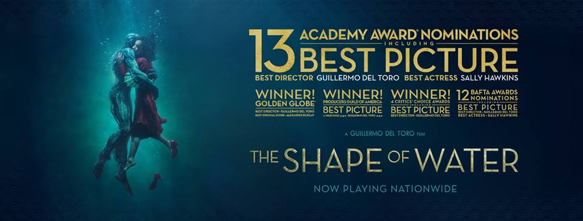

 Về Việt Nam, Shape of Water được đặt tựa Việt là "Người đẹp và thủy quái", một tựa mang tính câu khách hơn nội dung tựa gốc (Hình hài của nước) và dễ làm người xem liên tưởng đến bộ phim hoạt hình "Beauty and the Beast". Tuy nhiên, khác với bối cảnh "công chúa - hoàng tử" của "Beauty and the Beast", Shape of Water gần như là một câu chuyện cổ tích thời hiện đại, dễ lay động và chiếm trọn cảm xúc của người xem. Những con quái vật trong trí tưởng tượng của tuổi thơ đạo diễn Guillermo del Toro người Mexico dường như đã truyền cảm hứng cho các tác phẩm của ông, nhất là trong tác phẩm này khi mà ông có dịp đảm nhận cả vai trò biên kịch và đạo diễn. Trước đó, ông từng chắp bút cho những quái vật bước lên màn ảnh với Hellboy (2004), Pan's Labyrinth (2006) và mới đây là Paficic Rim (2013) cùng hàng loạt phim truyền hình khác.
Làm mới câu chuyện cũ: Người đẹp và quái vật Phim dựa trên bối cảnh thời kỳ Chiến tranh lạnh giữa Liên Xô (nay là Nga) và Mỹ hậu thế chiến thứ hai, khi mà hai cường quốc đang tìm mọi cách để giành ảnh hưởng và vượt trước đối phương về nhiều phương diện, nhất là khoa học công nghệ.
Trong phim, cô gái Elisa Esposito (do Sally Hawkins thủ vai) bị câm do nạn bạo hành từ thời thơ ấu (qua chi tiết những dấu vết để lại trên cổ) được nhận vào làm lao công cho một cơ sở nghiên cứu đặc biệt của chính phủ Mỹ. Hằng ngày cô vẫn đều đặn nhịp sống cô quạnh: Sáng đi làm, tối bắt xe bus về nhà. Cô chỉ có hai người thân thiết là bà chị đồng nghiệp Zelda và ông họa sĩ già đồng tính chung phòng, cô đơn tới nỗi hằng ngày cô chỉ biết giải quyết nhu cầu sinh lý của mình bằng cách thủ dâm, một nhịp sống đều đặn đến mức như người... tự kỷ. Cho tới một ngày, trung tâm nghiên cứu chỗ Elisa làm việc tiếp nhận một sinh vật lạ vừa được chuyển từ Nam Mỹ về, theo mô tả thì sinh vật này được người dân và các bộ tộc bản xứ tôn sùng như Chúa nhưng những kẻ săn lùng nó của chính phủ Mỹ lại không nghĩ như vậy, nhất là đặc vụ Richard Strickland (Michael Shannon), người đã tự tay bắt sinh vật này đưa về Mỹ. Trong khi Richard luôn miệng gọi sinh vật này là đồ dơ bẩn và quái dị thì ngay trong lần tiếp xúc đầu tiên Elisa lại tỏ ra không sợ hãi. Thậm chí, theo thời gian cô dần cảm thấy có sự đồng điệu và đem lòng yêu thương sinh vật "người cá" này, bản thân sinh vật này giữa vòng vây xiềng xích và dùi cui điện cũng đã cảm nhận được tình cảm của Elisa. Cô dần cảm hóa và dạy cho người cá cách giao tiếp với con người bằng mọi cách, kể cả âm nhạc và cử chỉ...
Cuộc chạy đua của Elisa để giải thoát cho người cá cũng chính là quyết định giải thoát cho chính mình, trong khi sinh vật này cũng là miếng bánh tranh giành của chính phủ Liên Xô và Mỹ trong cuộc đua khoa học công nghệ và chinh phục vũ trụ thời chiến tranh lạnh. Chuyện tình giữa Elisa và sinh vật người cá trong phim rất đẹp nhưng cũng xót xa, họ tìm thấy nhau từ sự đồng điệu, đau khổ và cô đơn. Elisa phải diễn đạt mọi thứ bằng cử chỉ trong khi anh chàng người cá bị xiềng xích lại làm vật thí nghiệm, chính sự khiếm khuyết giúp họ dễ lấp đầy cho nhau. Dù phim sắp đặt cảnh làm quen giữa Elisa và chàng người cá này quá dễ, quá nhanh nhưng tổng thể bộ phim hay đã giúp người xem dễ dàng chấp nhận một vài chi tiết phi logic ấy.
Thực ra câu chuyện "cổ tích" của phim không mới, nhưng bối cảnh và cách xây dựng kịch bản cùng diễn xuất và nhạc phim đã thực sự "làm nên chuyện". Nhiều chi tiết đắt giá và nhiều câu chuyện được kể
Có một vài tình tiết khá thú vị, ngay chỗ bậc thang mà Elisa ngồi tâm sự với thủy quái trong Shade of Water, nếu để ý bạn sẽ thấy có tên con của bản 1954 "Creature" (video ở trên) - phim này kể về bà vợ của ông độc ác và ông đi bắt con yêu quái, được coi như là phần 1 của Shape of Water. Phim có nhiều tình tiết 18+ dù bản chiếu rạp đã bị cắt bỏ bớt, như cảnh Elisa khỏa thân đi tắm trong bồn (nhưng bị cắt cảnh thủ dâm) với chiếc đồng hồ đếm thời gian. Chiếc đồng hồ này đếm đúng 20 phút cũng là thời gian để trứng vừa chín lòng đào và mốc thời gian tắm gội/thủ dâm của Elisa.
Cảnh làm tình của vợ chồng Richard (bị cắt) với chi tiết đắt giá là cảnh Richard dùng bàn tay vừa bị đứt hai ngón vẫn còn rỉ máu để bị lấy miệng vợ, trong khi ánh mắt hắn hằn lên cả tia máu và thể hiện rõ tư tưởng thống trị đặc trưng của đàn ông Mỹ điển hình thời đó, dù là trong tình dục hay địa vị xã hội. Tuy vậy, các chi tiết 18+ này của phim không thô và đều dùng để phục vụ cho câu chuyện của phim.
Một số người cho rằng nữ diễn viên Sally Hawkins không đủ đẹp để vào vai "công chúa" trong phim để sánh vai với chàng quái vật do Doug Jones hóa trang, nhưng đạo diễn del Toro đã có lý khi chọn Sally vào vai Elisa, khi mà cô lao công trong phim mang vẻ đẹp bình dị, tất tả ẩn giấu bên trong tâm hồn khát khao hạnh phúc. Diễn xuất của Sally khiến nhiều người có cảm giác như cô "câm" thật sự, ánh mắt sâu thẳm của cô khi mơ màng nghĩ về người cá hay khi đôi mắt quyết liệt tìm cách giải cứu cho anh chàng. Khi đó, sẽ không còn ai màng tới nhận xét về nhan sắc của Sally trong phim nữa... Dĩ nhiên, luôn có kẻ ngáng đường trong phim và nhân vật phản diện thượng tá Richard Strickland đã khiến người xem cảm nhận được tham vọng quyền lực cũng như tư tưởng áp đặt của hắn. Hắn muốn có nhiều hơn những gì đang có, muốn đổi xe hơi xịn hơn và muốn thể hiện được nhiều hơn với tướng quân Frank Hoyt, kể cả khi phải bộc lộ dã tâm cao độ ở những phút cuối trong phim.
Phim không chỉ kể về Elisa, chàng người cá, Richard hay cuộc chạy đua nghẹt thở giữa Liên Xô và Mỹ, phim còn kể cho bạn về những mảnh đời bất hạnh khác. Đó là về ông bạn họa sĩ già Giles đồng tính đang cố thoát khỏi cảnh thất nghiệp và tìm kiếm mối quan hệ với cậu phục vụ quán bar, về vị tiến sĩ bí hiểm Hoffstetler - người đã tìm mọi cách để tuồn thông tin về sinh vật này cho phía Liên Xô nhưng rồi thay đổi quyết định đột ngột vào phút chót... Diễn xuất và âm nhạc Nhìn chung, các tuyến nhân vật trong phim đều thể hiện khá xuất sắc vai diễn của mình, Sally Hawkins vào vai diễn Elisa và cô chỉ được phép diễn xuất qua cử chỉ, ánh mắt và khuôn mặt, một vai diễn đòi hỏi nhiều về nội tâm và cô đã thực sự làm tròn vai, giúp người xem cảm nhận được nỗi cô đơn sâu thẳm trong nhân vật và cuộc đấu tranh nội tâm để thoát khỏi hoàn cảnh hiện tại của cô.
Vai diễn thủy quái do Doug Jones hóa trang cũng vậy, chỉ là những tiếng gầm rú của một con quái vật nhưng bên trong đó là một tâm hồn và trí thông minh của con người, biết yêu thương, đồng cảm và học hỏi giao tiếp. Ngoài ra cũng phải khen đội ngũ hóa trang và kỹ xảo của bộ phim đã giúp đôi mắt của thủy quái trở nên có hồn, đảo qua đảo lại và ướt át đầy sức sống. Nhưng xuất sắc hơn cả có lẽ phải kể tới vai diễn thượng tá Richard của diễn viên Michael Shannon - người từng vào vai Đại tướng Zod phản diện trong phim Man of Steel. Nhân vật này có nội tâm phức tạp, ẩn giấu bên trong sự khuôn giáo của một công chức quân đội là một kẻ hám quyền lực và nhiều tham vọng. Khuôn mặt, ánh mắt và những hành động của Richard sẽ còn khiến người xem ám ảnh cho tới cuối phim...
Bên cạnh đó, có cảm giác như dàn diễn viên phụ trong phim cũng nhập vai rất ổn, dù họ hòa lẫn vào nền của bộ phim để kể chuyện về các nhân vật chính nhưng sự xuất hiện của họ đều có lý do và không thừa thãi, kể cả bà chị đồng nghiệp của Elisa. Bên cạnh biên kịch, diễn xuất và đạo diễn, một trong những điểm sáng để giúp bộ phim Shape of Water này nhận tới 13 đề cử cho giải Oscar năm nay chính là nhạc phim. Các bản nhạc êm dịu và lắng đọng của nhà soạn nhạc tài ba người Pháp Alexandre Desplat trong phim sẽ đưa bạn về với thời kỳ 1962 của nước Mỹ, dịu dàng, bay bổng và du dương từ đầu đến cuối phim.
Một bộ phim đáng để ra rạp Tổng quan, Shape of Water là một phim tâm lý tình cảm kiêm giả tưởng đáng xem nhất từ đầu năm tới nay, mối tình trong phim là sự kết hợp giữa hiện thực và siêu thực, phản ánh thực trạng của xã hội Mỹ những năm 1960, thời của tình yêu trong sáng, giấc mơ chinh phục không gian và niềm tin vào tương lai bất chấp chiến tranh lạnh, định kiến và bất công đang đầy rẫy trong xã hội. Không phải ngẫu nhiên mà mỗi bộ phim của đạo diễn del Toro đều được ông chăm chút đầu tư tới 3 năm như ông chia sẻ, có sự chỉn chu từ hình ảnh, âm nhạc và diễn xuất cũng như kịch bản, dù đó là bộ phim kể lại câu chuyện đã cũ: Tình yêu giữa các giống loài khác nhau...
Phim mở màn và kết thúc theo kiểu dẫn chuyện visual poem, hơi sến súa nhưng hoàn toàn hợp lý, khiến người xem hòa quyện vào âm nhạc và câu chuyện của phim đẹp nao lòng tựa như một bản tình ca lãng mạn, cái kết có hậu của phim cũng trở nên có lý dù nó được siêu hiện thực hóa ở mức cao: Elisa biến thành người cá! Tạm trích đoạn thơ cuối phim thay cho lời kết đầy lắng đọng:
Shape of Water (2018) có tựa Việt "Người đẹp và Thủy quái" đã chính thức ra rạp vào thứ Sáu (2/2) trên các hệ thống rạp của cả nước với thời lượng 123 phút. Phim dán mác 18+ do có một số cảnh nóng trong phim, dù đã được tiết chế ở mức tối giản nhưng bạn nên lưu ý khi cho con em đi xem cùng.
Nguồn: TM - VnReview